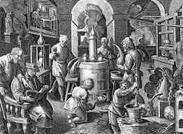

Friendship is
like whiskey,
the older the better
Whisky ma długą i burzliwą historię. W roku 1994 hucznie obchodzono jej 500-ną rocznicę urodzin, ale tak naprawdę była to okrągła rocznica upamiętniająca pierwszą wzmiankę o masowej produkcji, jaką w 1494 roku zapisano w księgach podatkowych:
"Deliver Eight bolls of malt to Friar John Cor wherewith to make aqua vitae" („Dostarczyć osiem toreb słodu do mnicha Johna Cora na produkcję wody życia”)

Mnich John Cor z opactwa Lindores otrzymuje od króla Jakuba IV zgodę na zakup 870 kg jęczmiennego słodu - na podstawie takiej ilości słodu można domniemywać, iż w 1494 roku produkcja whisky musiała już być dobrze rozwinięta - a więc data narodzin whisky sięga daleko wstecz. Jak to zwykle bywa, pojawiła się i jest szeroko znaną legenda, według której to święty Patryk w V w.n.e z terenów ówczesnej Francji miał przywieźć sztukę destylacji do Irlandii. Na teren dzisiejszej Szkocji trafiła owa sztuka prawdopodobnie dzięki mieszkańcom Dalriady.
Co ciekawe, na początku technologia ta używana była do produkcji perfum. Później zaczęto stosować ją we Francji i Hiszpanii do destylacji win. Dopiero na końcu zastosowano destylację do produkcji wysokoprocentowych alkoholi na bazie zacierów zbożowych w krajach, gdzie klimat uniemożliwiał hodowlę winogron. Alkohole te produkowane były przez mnichów (w klasztorach), a ich przeznaczeniem była poprawa zdrowia; zalecano ich spożywanie np. w przypadkach ospy, kolki, paraliżu i przy wielu innych dolegliwościach. Grunt to dobry marketing: głoszono wówczas, że regularne picie whisky może...
Chcesz się więcej dowiedzieć dowiedzieć na temat whisky? Odwiedź stronę!